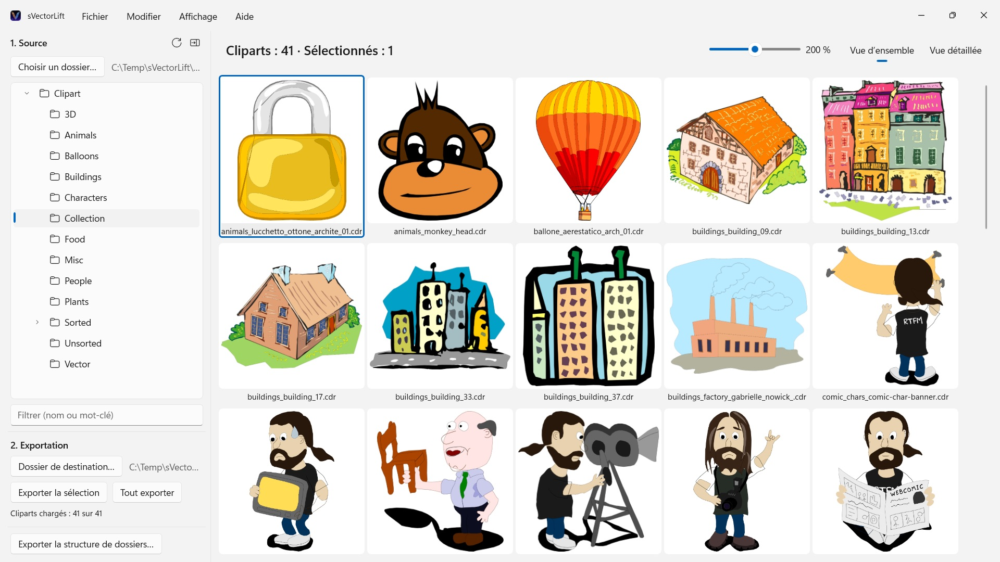
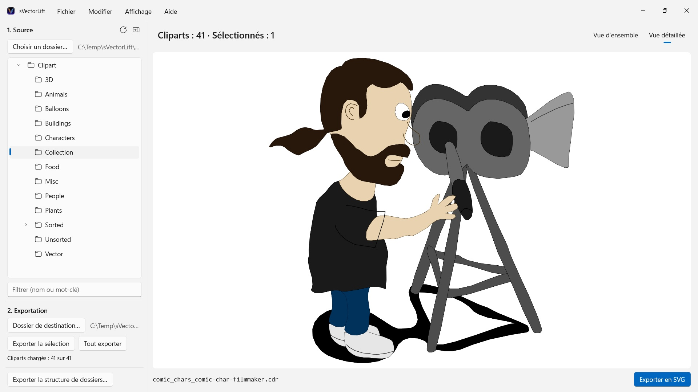

sVectorLift
Ouvre CorelDRAW 6–9 (.cdr), CMX y compris CDRX, WMF, CGM, QuickDraw 3D et SVG
Des milliers de cliparts vintage sur des CD CorelDRAW, prisonniers de formats que presque plus aucun logiciel n’ouvre. sVectorLift vous montre des collections entières d’un coup d’œil et les transforme en véritables SVG, utilisables aujourd’hui.
 Regarder le film – 3 minutes sur YouTube, en anglais avec sous-titres en français
Regarder le film – 3 minutes sur YouTube, en anglais avec sous-titres en français


Quelque part sur une étagère dort un CD de cliparts que vous avez payé il y a des années. Les fichiers sont toujours là — mais presque plus rien sur votre PC ne les ouvre, et encore moins vous montre toute la collection d’un coup d’œil.
Langues prises en charge (25) : Deutsch · English · Español · Français · Italiano · Nederlands · Português (Brasil) · Português (Portugal) · Svenska · Norsk · Suomi · Polski · Čeština · Hrvatski · Magyar · Română · Türkçe · Русский · Українська · فارسی · ไทย · 日本語 · 한국어 · 简体中文 · 繁體中文
L’app suit la langue d’affichage de Windows.
sVectorLift redonne vie à ces dessins. Il reconstruit chaque illustration en véritable SVG : net à toutes les tailles, modifiable, prêt à être glissé dans Illustrator, Affinity, Inkscape, Figma — ou sur votre site web. Pas seulement de nouveau visibles. De nouveau utilisables. C’est tout le sens du « Lift » : des dessins vectoriels vintage, hissés au niveau des outils d’aujourd’hui.
CE QU’IL OUVRE
- Documents CorelDRAW (.cdr), versions 6 à 9
- Corel Binary Meta File (.cmx) — y compris la première variante CDRX, que les autres outils refusent de lire
- Windows Metafile (.wmf)
- Computer Graphics Metafile (.cgm)
- QuickDraw 3D Metafiles (.3dm, .3dmf), rendus sous forme d’image
- Scalable Vector Graphics (.svg), affichés directement
Beaucoup de fichiers portant l’extension .cdr ne sont pas de vrais documents CorelDRAW, mais du CMX — c’est précisément pour cela que les convertisseurs habituels échouent. sVectorLift lit les deux.
sVectorLift est conçu pour les bibliothèques de cliparts : dessins, symboles, illustrations. Ce n’est pas un outil de mise en page et il ne cherche pas à reproduire des brochures multipages ou des maquettes d’impression.
UNE VRAIE CONVERSION VECTORIELLE
Ici, pas de capture d’écran d’une vignette d’aperçu. sVectorLift analyse le dessin lui-même : tracés et courbes de Bézier, couleurs de remplissage, dégradés, contours et pointillés, motifs et textures, photos incorporées, objets texte. Ce qui en sort, ce sont de véritables données vectorielles, que vous pouvez agrandir, recolorer et retoucher — et non l’image d’un dessin.
Les fichiers purement bitmap sont exportés en PNG : rien ne se perd.
Besoin d’une image plutôt que d’un dessin vectoriel ? « Exporter en PNG » et « Exporter en JPG » rendent n’importe quel dessin sous forme d’image, fichiers SVG compris — à la taille que vous définissez dans les Paramètres.
PARCOUREZ VOTRE BIBLIOTHÈQUE
- Arborescence de dossiers pour toute la collection, sous-dossiers compris
- Grille de vignettes vectorielles nettes, avec curseur de taille
- Vue détaillée avec navigation au clavier dans le dossier
- Filtre par nom ou par mot-clé
- Sélection multiple comme dans l’Explorateur de fichiers : clic, Ctrl+clic, Maj+clic, rectangle de sélection, Ctrl+A
- Ouvrir un fichier directement depuis l’Explorateur de fichiers (« Ouvrir avec » ou double-clic)
- Dossiers récents qui retiennent où vous en étiez — sous-dossier et fichier sélectionné
- Export d’une sélection ou d’un dossier entier en une seule étape
- Conversion d’arborescences de dossiers entières, sous-dossiers compris, en une seule fois — la structure est conservée dans le dossier de destination
- Renommer, afficher dans l’Explorateur de fichiers, déplacer vers la Corbeille
- Réorganiser la collection par glisser-déposer sur un dossier de l’arborescence — selon les règles de l’Explorateur de fichiers, Ctrl pour copier, Maj pour déplacer, et annulable avec Ctrl+Z ; aussi vers et depuis l’Explorateur de fichiers
RAPIDE ET ÉCONOME
Les vignettes ne sont calculées que pour ce que vous regardez vraiment, en arrière-plan, puis mises en cache. Les grands dossiers s’ouvrent immédiatement, au lieu de se figer le temps de traiter des milliers de fichiers.
Tout reste sur votre PC. Aucune connexion réseau, aucun compte, aucune collecte de données.
CorelDRAW est une marque de Corel Corporation. sVectorLift est un logiciel indépendant, sans lien avec Corel.
- Nécessite Windows 11 ou version ultérieure
- 24 langues
- Assistance : SwiftAppsBavaria@gmx.net
- Politique de confidentialité